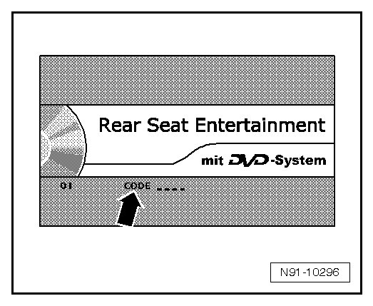
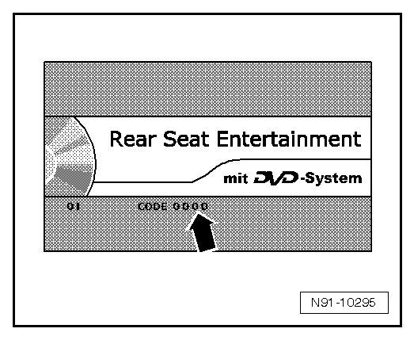

Programming and Relearning
System Lock, Deactivating
If the multimedia system was disconnected from the voltage supply, it is electronically locked. After reconnecting to the voltage supply, the four-digit code must be entered in order to deactivate the multimedia system lock again. To do this, proceed as follows:
- Obtain four-digit code from customer.
• If the customer states that he or she has never had to enter the code, then the factory setting can be tried. The code set at the factory is: 0000
- Switch multimedia system on with POWER button.
The following screen with word "CODE" - arrow - appears.

The code can be entered using the buttons on the DVD player.
- Enter first number of anti-theft code - arrow - with VOLUME N/+ buttons.

- For the next code digit, switch by pressing NEXT button.
- Enter second digit of anti-theft code with VOLUMEN/+ button.
- Repeat procedure until all 4 digits have been entered.
- Now press SOURCE button on DVD player.
"01 CHGE/ACC and code number entered" appear on screen.
- Press SOURCE button on DVD player again.
The multimedia system is now activated.
• If an incorrect code number is accidentally entered when deactivating system lock with electronic anti-theft system, the entire procedure can be repeated up to 9 times.
• The first three attempts can be performed immediately after one another. Then there is a waiting period of approximately 30 minutes for each additional attempt. The number and attempts and the remaining waiting time are displayed in the screen.
• After the tenth entry attempt, the multimedia is locked. A replacement with costs is then necessary.